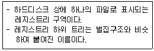
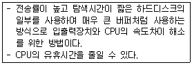
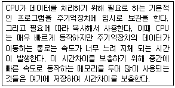
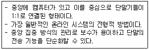

PC정비사-2급 (2016-07-24 기출문제)
1과목: PC유지보수
1. MMC(Microsoft Management Console)에 대한 설명 중 잘못된 것은?
- 콘솔이라는 관리 도구 모음을 만들고 저장하고 여는 도구이다.
- 콘솔에는 스냅인, 확장 스냅인, 모니터 컨트롤, 작업, 마법사 그리고 Windows 7 시스템의 여러 하드웨어, 소프트웨어 및 네트워킹 구성 요소를 관리하는데 필요한 문서 등의 항목이 들어 있다.
- 기존 MMC 콘솔에 항목을 추가하거나 새 콘솔을 만들 수 없다.
- 콘솔에는 콘솔트리를 표시 할 수 있는 하나 이상의 창이 있다.
(정답률: 88%)

2. FAT32 파일 시스템을 지원하지 않는 운영체제는?
- Windows NT 4.0
- Windows ME
- Windows XP
- Windows 7
(정답률: 77%)
3. Windows 7 Professional에서 제공하는 시스템 복원 기능을 통하여 복원할 수 없는 것은?
- 드라이버
- BIOS
- Windows용 시스템 파일
- 레지스트리
(정답률: 67%)
4. Windows에서 발생되는 인터럽트(Interrupt)의 종류가 아닌 것은?
- 상태 전이 인터럽트
- 슈퍼바이저 콜 인터럽트
- 재시작 인터럽트
- 입출력 인터럽트
(정답률: 82%)
5. Windows 7 Professional의 제어판에서 할 수 없는 작업은?
- 국가 및 언어 설정
- 성능 정보 및 도구 설정
- 색인 옵션 설정
- 시작 프로그램 설정
(정답률: 81%)
6. Windows 7의 버전이 아닌 것은?
- Windows 7 Starter
- Windows 7 Home Premium
- Windows 7 Media Center Edition
- Windows 7 Enterprise
(정답률: 87%)
7. Windows 7의 레지스트리에 대한 설명 중 잘못된 것은?
- 텍스트 기반이며, 크기가 32KB를 넘지 못한다.
- 정렬된 계층구조를 가진다.
- HKey_Users키로 사용자별 정보를 지원한다.
- 원격지에서 관리와 시스템 정책을 설정 할 수 있다.
(정답률: 85%)
8. 여러 개의 작업을 하나로 묶어 자동적으로 한 작업에서 다른 작업으로 연속될 수 있도록 한 처리방식은?
- 개별처리방식
- 일괄처리방식
- Job By Job방식
- 시분할 시스템
(정답률: 88%)
9. 개인용 컴퓨터, 마이크로컴퓨터 및 통신에서 많이 사용되는 코드로서 미국 국립 표준 연구소에서 제정한 7bit 코드는?
- EBCDIC 코드
- BCD 코드
- ASCII 코드
- HAMMING 코드
(정답률: 85%)
10. 운영체제에 대한 설명 중 올바른 것은?
- Windows XP는 속도가 빠른 플래시 메모리를 캐시 메모리로 이용해 시스템 성능을 향상시키는 '레디부스트'를 지원한다.
- Windows Vista는 멀티터치 기능이 적용된 MS 최초의 OS이다.
- 그래픽 사용자 인터페이스(GUI)를 이용한 운영체제로는 Windows 7, MAC OS-X 등이 있다.
- Windows 7 Professional은 비트라커 드라이브 암호화를 지원한다.
(정답률: 67%)
11. 컴퓨터 시스템의 성능 극대화 측면에서 운영체제의 목적이 아닌 것은?
- 처리능력의 증대
- 편의성의 극대화
- 신뢰도 향상
- 사용 가용도의 증대
(정답률: 86%)
12. 다음에서 설명하는 용어는?

- 허브(Hub)
- 하이브(Hive)
- 게이트웨이(Gateway)
- 네트워크(Network)
(정답률: 88%)
13. Windows를 시작하는 데 필요한 하드웨어 관련 파일이 포함된 디스크 볼륨은?
- 시스템 파티션
- 미분할 파티션
- 듀얼 부팅 파티션
- 백업 부팅 파티션
(정답률: 85%)
14. 다음에서 설명하는 내용은?

- Direct Memory Access
- Clocking
- Spooling
- Waiting
(정답률: 77%)
15. 보안이나 해킹 방지를 위한 공유 폴더의 관리 방법으로 잘못된 것은?
- 공유 폴더는 되도록이면 만들지 않는 것이 좋다.
- 공유 폴더는 반드시 암호를 걸어 사용한다.
- 공유를 해야 하는 폴더가 2개 이상 있을 경우에는, 드라이브의 루트 폴더를 공유하여 접근이 용이하도록 한다.
- 공유 폴더의 용도에 따라 필요한 액세스 권한만 부여한다.
(정답률: 83%)
2과목: PC운영체제
16. 다음에서 설명하는 내용은?

- 롬(ROM)
- 플래시 롬(Flash ROM)
- 캐시 메모리(Cache Memory)
- 마스크 롬(Mask ROM)
(정답률: 89%)
17. 주기억장치의 일반적인 특성이 아닌 것은?
- 반도체 소자를 주로 사용한다.
- 비휘발성이다.
- 보조기억장치에 비해 속도가 빠르다.
- SDRAM, DDR-SDRAM, RDRAM등이 사용된다.
(정답률: 87%)
18. 다음 중 디지털 카메라가 사용하지 않는 인터페이스는?
- IEEE 1394
- IrDA
- USB
- IDE
(정답률: 68%)
19. RS232C 커넥터라고 부르기도 하는 이 커넥터는 9핀과 25핀의 두 가지 종류가 있다. 다음 중 이 커넥터는?
- PS/2 커넥터
- USB 커넥터
- COM 커넥터
- LPT 커넥터
(정답률: 65%)
20. 하드디스크의 스핀들 모터 회전수로 사용되는 단위는?
- RPM
- APM
- PPM
- BPS
(정답률: 86%)
21. 컴퓨터에 일정한 전압을 유지시켜주기 위해 설치하는 장비는?
- AVR(Automatic Voltage Regulator)
- SRM(Storage Resource Management)
- ASP(Application Service Provider)
- AUI(Attachment Unit Interface)
(정답률: 90%)
22. 자기(Magnetism)를 사용하여 저장하는 방식이 아닌 것은?
- FDD
- Zip Drive
- Blu-ray
- HDD
(정답률: 82%)
23. 사진이나 문서 등을 컴퓨터용 이미지로 변환해주는 장치는?
- 키보드
- 칼라프린터
- 스캐너
- 복사기
(정답률: 93%)
24. 메모리를 기능상 분류한 것 중 성격이 다른 하나는?
- DRAM
- SRAM
- SDRAM
- DIMM
(정답률: 76%)
25. 평면상의 위치 좌표를 여러 가지 방법으로 전기 신호로 변환하여 컴퓨터에 입력하는 장치는?
- 서든 모션 센서(SMS)
- 라우터(Router)
- 타블렛(Tablet)
- 허브(HUB)
(정답률: 78%)
26. 메인보드 칩셋의 주요 기능과 이에 대한 설명 중 잘못된 것은?
- 메모리 제어 : 시스템의 메인 메모리와 캐시 메모리 관리
- IO 제어 : 키보드, 마우스, DMA 등의 IO 장치 관리
- PCI 브리지 : PCI 버스 관리
- E-IDE 제어 : 내장된 시계 관리
(정답률: 81%)
27. 하드디스크의 데이터 주소지정 방법 중 LBA(24bit) 방식의 최대 지원 용량은?
- 160GB
- 125GB
- 150GB
- 137GB
(정답률: 70%)
28. 전원공급기에서 직류 출력전압이 안정되면 'H'상태로 되고, 정상치 이하로 떨어지면 'L'상태로 되는 단자는?
- ＋12 Volt
- -12 Volt
- Power Good
- ＋5 Volt
(정답률: 81%)
29. 시스템의 각 프로세스들이 서로 필요로 하는 자원을 순환적으로 요청하고 있어 어느 프로세스도 진행을 할 수 없는 상태를 지칭하는 용어는?
- 시간분할(Time-Sharing)
- 분산처리(Distributed Processing)
- 교착상태(Deadlock)
- 아사상태(Starvation)
(정답률: 87%)
30. USB, PS/2, COM 포트에 연결되는 마우스에 사용되는 전압으로 올바른 것은?
- 2.8V
- 3V
- 5V
- 5.5V
(정답률: 81%)
3과목: PC주변기기
31. BIOS Setup의 USER PASSWORD 메뉴에서 설정한 패스워드를 관리자가 잊어버렸을 때 취할 수 있는 조치로 올바른 것은?
- BIOS를 교체한다.
- 메인보드를 교체한다.
- 모든 전원을 차단 한 뒤 메인보드의 건전지를 잠시 제거한 후 결속한다.
- Keyboard의 ESC Key를 클릭한다.
(정답률: 85%)
32. 오버클럭킹(Over Clocking)에 대한 설명 중 잘못된 것은?
- 인텔 i5-2500K CPU는 배수락이 해제된 프로세서로 오버클러킹에 유리하다.
- 배수 변경에 의한 오버클럭은 메모리 부분 클럭에 영향을 주지 않는다.
- CMOS의 CPU Core Voltage 에서 전압을 높여주면 오버클럭 헤드룸이 향상되나 지나치게 높은 경우 부품에 손상을 가져올 수 있다.
- 보드에서 지원하지 않는 베이스클럭으로도 설정 할 수 있다.
(정답률: 76%)
33. 컴퓨터 조립 후 전원을 켜고 테스트를 할 때 모니터에 아무런 화면도 나타나지 않는 문제의 원인으로 잘못된 것은?
- 전원 공급 장치의 불량
- 하드디스크의 불량
- 램이 제대로 장착되어 있지 않은 경우
- 그래픽 카드가 제대로 연결되어 있지 않은 경우
(정답률: 74%)
34. BIOS 설정에서 할 수 없는 작업은?
- System Date/Time 설정
- Floppy Disk Drive 설정
- Disk Partition 설정
- Disk 부팅 순서 설정
(정답률: 78%)
35. Award BIOS의 CMOS 설정 메뉴 중 "STANDARD CMOS SETUP"에서 설정할 수 없는 것은?
- 컴퓨터 내부 날짜와 시간 설정
- 메모리 스피드 설정
- 하드디스크 타입 설정
- 플로피디스크 드라이브 타입 설정
(정답률: 57%)
36. 컴퓨터에 네트워크 인터페이스 카드를 연결하였으나 Windows에서 카드가 정상적으로 동작하지 않는다. 이때 확인해야 할 내용으로 잘못된 것은?
- 슬롯에 정확히 꽂혀있는지 살펴본다.
- 슬롯에 문제가 있을 수 있으므로 슬롯의 위치를 바꿔본다.
- 네트워크 인터페이스 카드는 인터넷에 연결되어야 Windows의 장치 관리자에서 인식이 되므로, 인터넷의 연결 상태를 확인한다.
- 카드의 드라이버가 자동으로 인식되지 않는다면 함께 제공된 CD안의 드라이버를 수동으로 설치한다.
(정답률: 66%)
37. Windows 7에서 자동으로 주변장치를 인식하여 사용자가 쉽게 장치를 추가할 수 있는 기능은?
- Plug & Play
- CMOS Setup
- ROM BIOS
- DMA
(정답률: 87%)
38. Windows에서 3D를 지원하는 게임이 실행되지 않을 경우 해결책으로 잘못된 것은?
- CPU 및 메모리 용량이 게임이 요구하는 최소 사양에 미달하는 경우 해당 부품을 업그레이드 한다.
- 그래픽 카드의 IRQ 번호를 다른 번호로 수정한다.
- DirectX가 게임에 맞는 올바른 버전으로 설치되어 있는지 확인한다.
- 그래픽 카드 드라이버가 제대로 설치되어 있는지 확인한다.
(정답률: 82%)
39. Windows가 정상적으로 종료되지 않는 이유로 잘못된 것은?
- Windows에서 실행중인 프로그램을 비정상적으로 종료했기 때문이다.
- 시작 프로그램과 Windows가 충돌하기 때문이다.
- 램 상주 프로그램과 Windows가 충돌하기 때문이다.
- 바이오스를 최신 버전으로 업데이트를 했기 때문이다.
(정답률: 83%)
40. Windows를 사용하는 도중 속도가 점점 느려지는 현상이 발생하였다. 문제의 원인으로 잘못된 것은?
- 레지스트리가 점점 커지고 불필요한 내용이 쌓이기 때문이다.
- Windows에서 사용하는 DLL과 드라이버 파일이 많아지기 때문이다.
- 하드디스크의 단편화가 심해지기 때문이다.
- 디스크 캐시와 가상 메모리의 성능이 저하되기 때문이다.
(정답률: 49%)
41. 현재 운영하고 있는 Web 서버에 사용자가 급증하여 응답시간이 현저히 늦어지는 현상이 발생할 경우 시스템의 응답시간을 빠르게 하기 위한 조치 방법으로 잘못된 것은?
- CPU 사용량을 확인하여, Web 서버 컴퓨터를 CPU가 여러 개로 구성된 병렬 컴퓨터 시스템으로 교체한다.
- 네트워크 전송량을 확인하여, Web 서버 컴퓨터가 연결된 전용선을 좀 더 용량이 큰 회선으로 교체한다.
- 메모리 사용량을 확인하여, Web 서버 컴퓨터의 주기억(Main Memory) 장치 용량을 늘린다.
- 하드디스크 사용 빈도를 확인하여, Web 서버 컴퓨터의 하드디스크 용량을 늘린다.
(정답률: 69%)
42. 시스템의 부팅 속도가 느려지는 원인으로 잘못된 것은?
- 램(RAM)에 기록된 파일의 단편화 심화
- 하드디스크 파일의 단편화 심화
- CMOS Setup에서의 Cache가 disable로 설정
- 바이러스 감염
(정답률: 63%)
43. 컴퓨터의 전원 스위치를 누르지 않았는데도 컴퓨터가 가끔 자동으로 켜진다. 해결책으로 올바른 것은?
- CMOS 셋업의 전원관리 메뉴 중 모뎀, LAN 카드 신호검출과 마우스, 키보드 동작에 따른 전원 공급 부분을 Disabled로 설정
- Windows 드라이버 문제이므로 제어판의 장치관리자를 사용하여 드라이버 점검
- 부트 섹터가 바이러스에 의해 파괴된 경우이므로 OS를 새로 설치
- RAM이 메인보드에서 지원하는 종류인지 확인
(정답률: 65%)
44. PnP 장치가 관리하지 않는 것은?
- DMA 채널
- TCP 포트
- IRQ
- 입출력 Address
(정답률: 76%)
45. Windows 업그레이드에 대한 설명으로 잘못된 것은?
- Custom 업그레이드 설치 작업은 폴더 변경 및 파일 시스템을 변경할 수 있다.
- Windows 95에서 업그레이드할 경우, 곧바로 Windows 7으로 업그레이드할 수 있다.
- 호환성이 없는 것으로 판단되는 소프트웨어는 제거한 후에 업그레이드를 수행하는 것이 좋다.
- 동적 업데이트 옵션을 선택하면, 웹 사이트로부터 장치와 어플리케이션을 위한 업데이트를 진행할 수 있다.
(정답률: 87%)
4과목: PC네트워크
46. 도메인 이름에 대한 설명 중 잘못된 것은?
- com : 상업적인 회사
- edu : 학교 등 교육기관
- mil : 국제단체
- org : 비영리단체
(정답률: 85%)
47. 인터넷(WWW)의 표준 프로토콜로 올바른 것은?
- Apple Talk
- NetBEUI
- TCP/IP
- RIP
(정답률: 90%)
48. 루프백(Loopback) 주소를 나타내는 특수 IP 주소는?
- 127.0.0.1
- 1.1.1.1
- 255.255.255.255
- 0.0.0.1
(정답률: 86%)
49. 일반적으로 네트워크를 통해서 공유할 수 없는 것은?
- 하드디스크
- 프린터
- 인터넷
- 램
(정답률: 81%)
50. 아래 내용의 통신망 구성 형태로 올바른 것은?

- 버스형
- 망형
- 스타형
- 링형
(정답률: 84%)